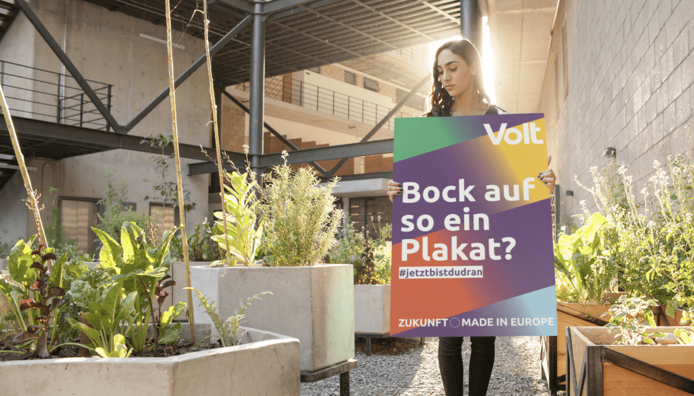

Parrainage d'affiches
Ton Europe. Ton quartier. Ton affiche électorale.
Soutenir notre campagne
Volt Germany essaie de couvrir le pays en violet. Ce n'est pas si facile pour un petit mouvement, nous avons donc besoin de votre aide en devenant un parrain des affiches ! Donnez pour aider à rendre Volt visible dans votre ville natale en Allemagne. Découvrez vos villes jumelées en Allemagne et soutenez Volt d'y être visible pendant la campagne (Liste de villes jumelées). Il existe de nombreuses options pour soutenir notre campagne et chaque contribution est bienvenue.